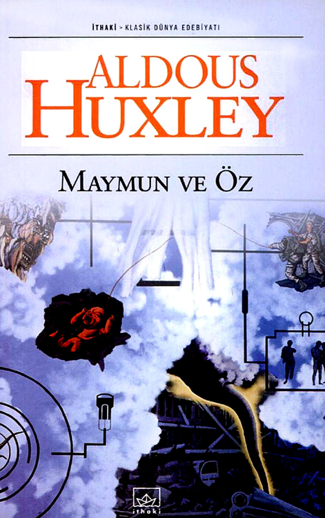
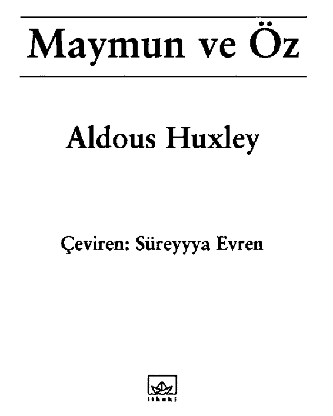
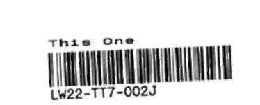

Ithaki Yayınlan - 294
Edebiyat - 239
ISBN 975-8607-40-5
Aldous Huxley / Maymun ve Öz
Ape and Essence
Çeviren: Süreyyya Evren
Redaksiyon: Gökçen Ezber
Editör: Ahmet Öz
1. Basım, İstanbul 2004
© Ithaki, 2004
Yayıncının yazılı izni olmaksızın alıntı yapılamaz.
Yayın Koordinatörü: Füsun Taş
Kapak Tasanmı: Murat Özgül
Düzelti: Zeki Bulduk
Sayfa Düzeni ve Baskıya Hazırlık: Cemile Öz
Kapak, Iç Baskı ve Cilt: Kitap Matbaacılık
ilhakı Yayınlan
Mühürdar Cad. »ter Ertûzûn Sok. 4/6 81300 Kadıköy İstanbul
Tel: (0216) 330 93 08 - 348 36 97 Faks: (0216) 449 98 34
Dağıtım:
Çatalçeşme Sok. Yavuz Han No: 26 Cagaloglu-lstanbul
Tel: (0212) 512 76 00 Faks: (0212) 519 56 56

Aldous Huxley
1894'te İngiltere'de doğdu. Yirmili yaşlarının başında şiir ve
öyküler yazmaya başlamasına karşın, yazın dünyasında ilk tanınışı Crome Yelîoıv (1921) (Krom Şansı) adlı romanıyla oldu.
Bunu izleyen romanları Antic Hay (1923), Tbose Barren Leaves (1925) ve Point Counter Point (1925), Huxley'nin çağdaş toplumun kusurlarını zekice olduğu kadar, acımasızca yargıladığı birer dahiyane taşlamadır. BraveNetv World(l952 -Cesur Yeni
Dünya, Ithaki Yayınlan-) adlı, en bilinen eserinin de aralann-
da bulunduğu birçok romanında yazarın, İkinci Dünya Savaşı
öncesinde tehlikeli bir şekilde kontrolden çıkmakta olduğunu
hissettiği toplumun karmaşasına gösterdiği düşünsel tepkiler
kolaylıkla hissedilebilir.
Yazar, 1963'te Amerika'da öldü.
I